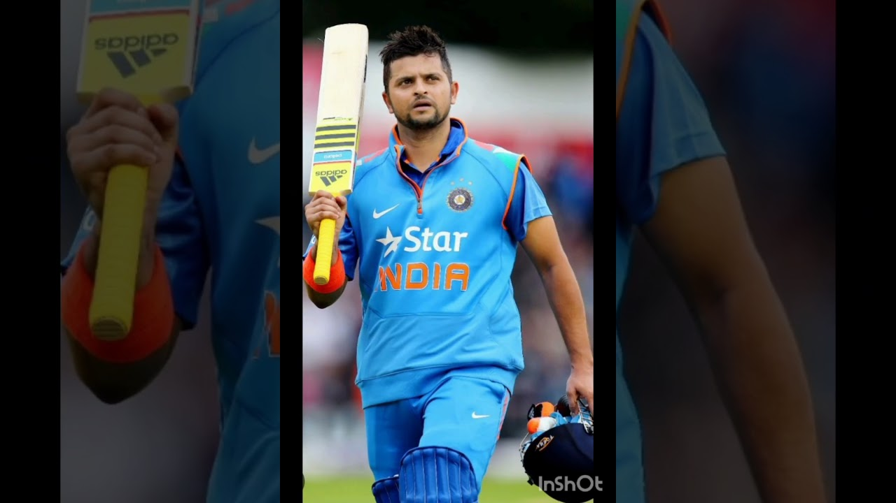
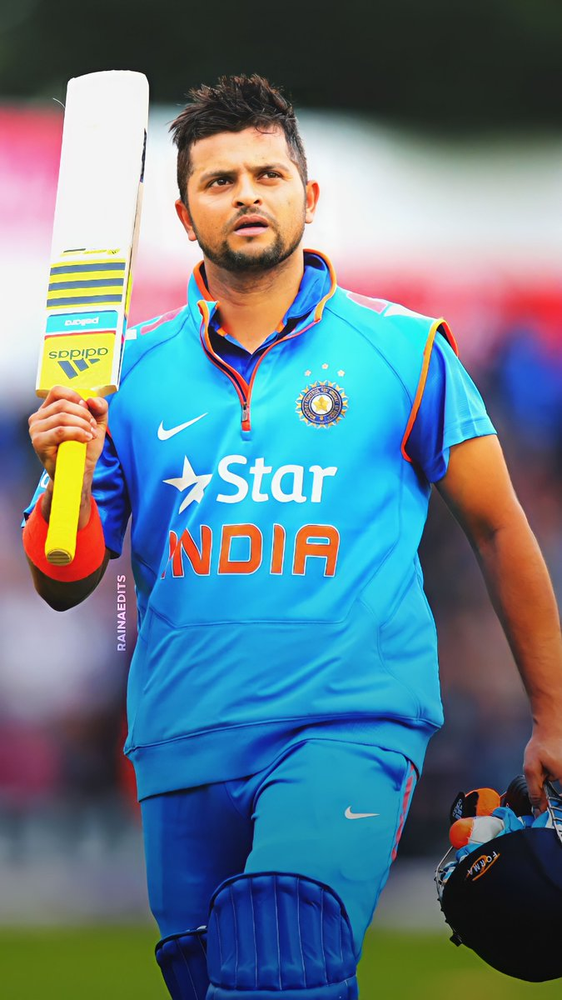
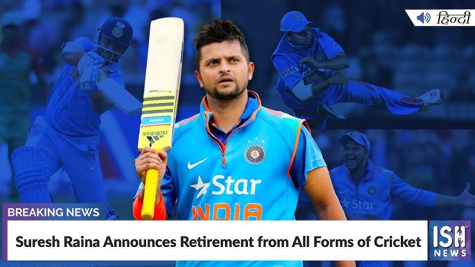
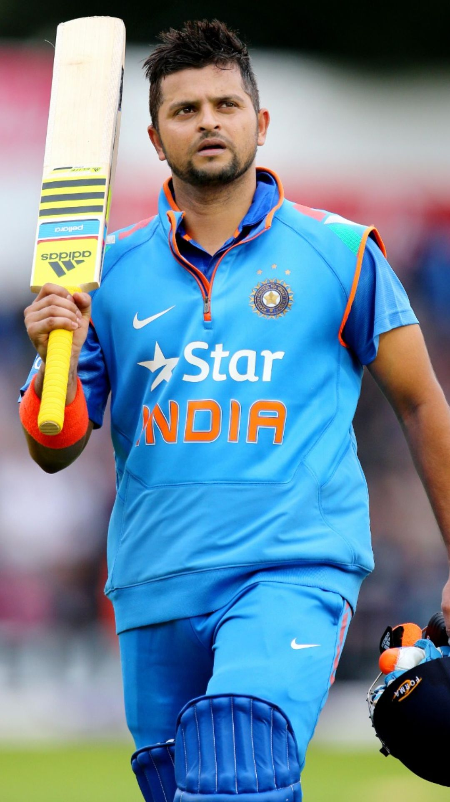
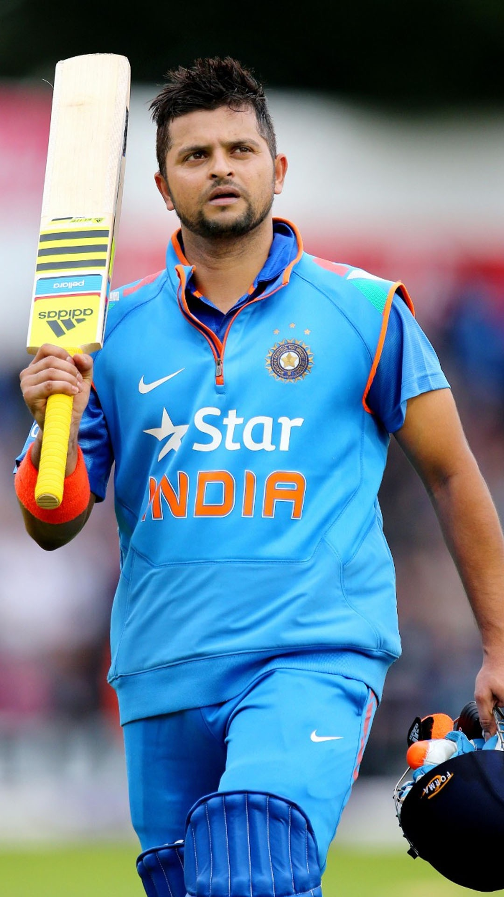
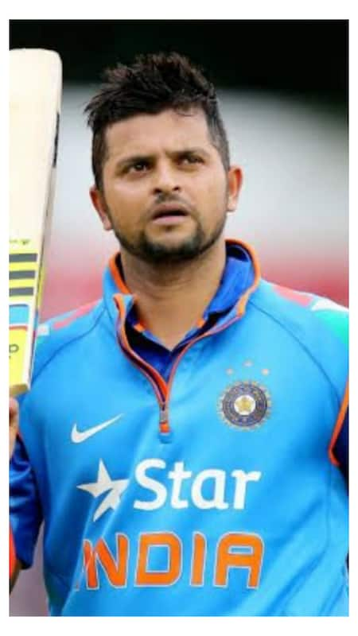
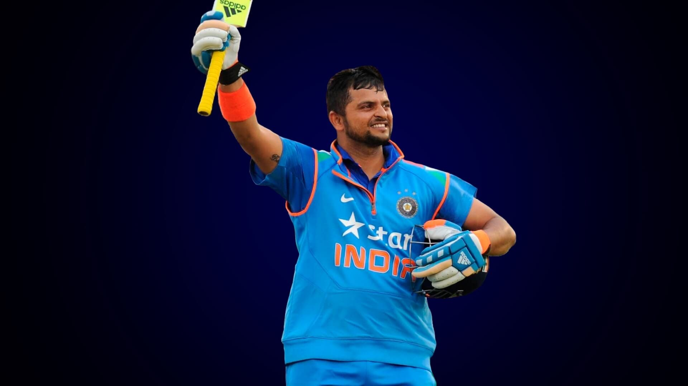
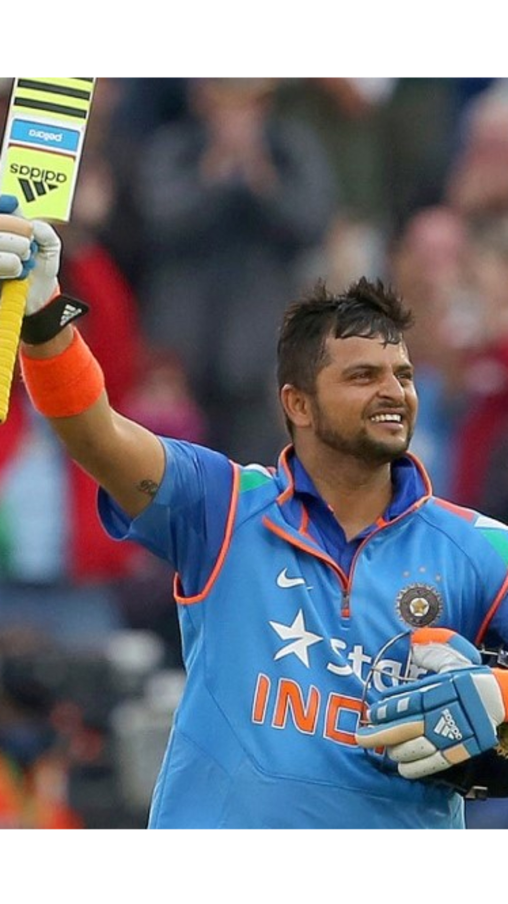
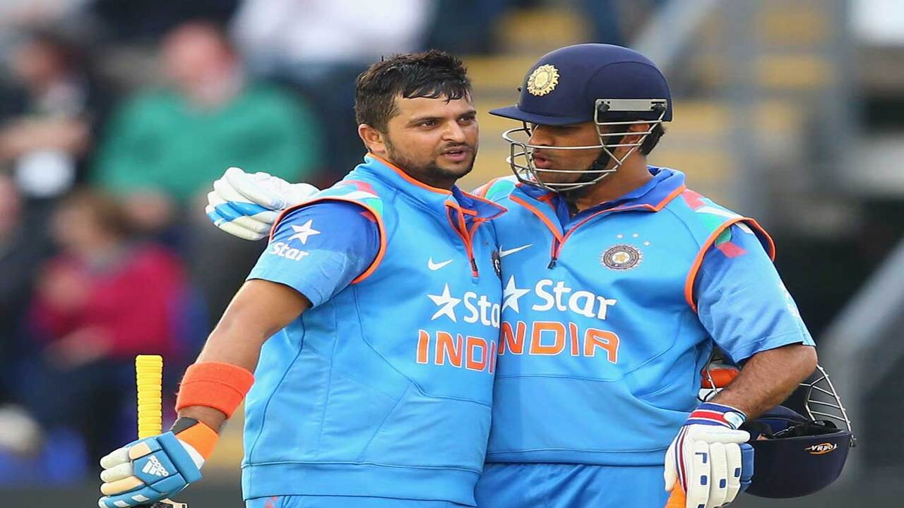
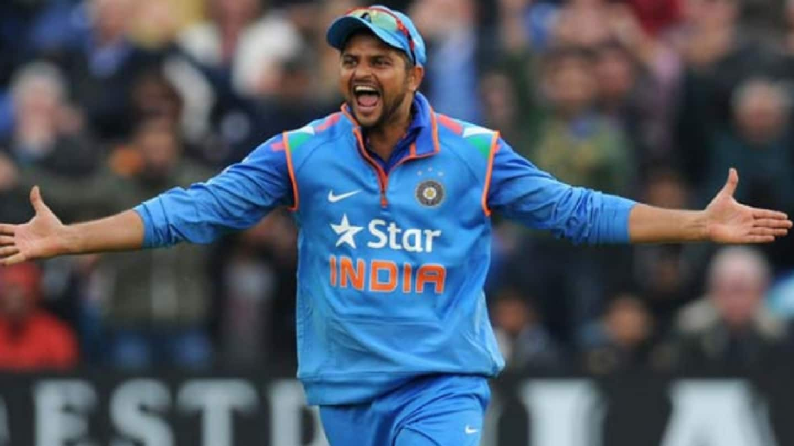
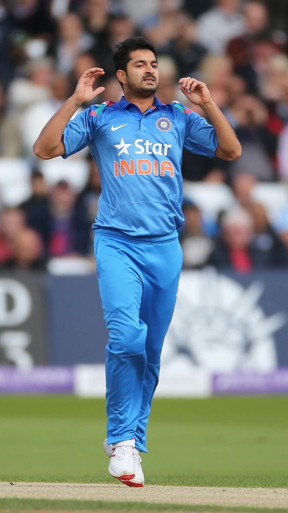
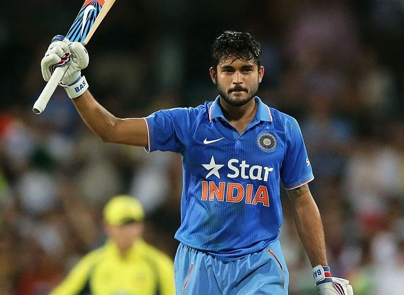
run_2026-09-05T17-34-09Z · pipeline 1.0.0
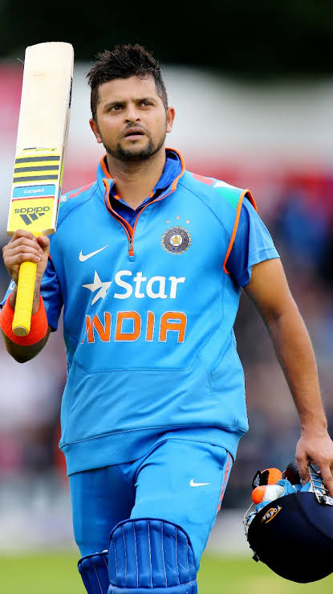
ac95f9641eb6b3602eddfe1e3df46eddd3b80884c9afcd475e002ab5a60c72c2b0337693b59a72ab63ed31b0fd6ac4f98ef871a27ccd08cd5e4fadb3cc61c295dce5e6811f6a4187da25f9bb27f54c74eeb25979b63652902341d27a2b79bd24Each one was embedded and scored against the probe face. The rejects are kept deliberately: they are the evidence that a real search ran.












0x382e906aa7abbe48f964a8d3c00cdd8cd53122bba5fc063f2ba0e42b0a5080480x56394614d21b38C0557810e1Bb1D934b4620B9C40x874af8455159eb1b33642857074e5c48748af0d9d894235a2bbc3e2d3022edd4The exact structure that was hashed and anchored.
{
"embedding_sha256": "b0337693b59a72ab63ed31b0fd6ac4f98ef871a27ccd08cd5e4fadb3cc61c295",
"input_image_sha256": "ac95f9641eb6b3602eddfe1e3df46eddd3b80884c9afcd475e002ab5a60c72c2",
"match": {
"image_sha256": "dce5e6811f6a4187da25f9bb27f54c74eeb25979b63652902341d27a2b79bd24",
"image_url": "https://i.ytimg.com/vi/CSpe96dvqYk/maxresdefault.jpg",
"page_title": "Happy retirement Ms dhoni x suresh raina ♥️ - YouTube",
"post_url": "https://www.youtube.com/shorts/CSpe96dvqYk",
"similarity": "0.9616"
},
"pipeline_version": "1.0.0",
"schema": "face-chain-verify/v1",
"search": {
"candidate_count": 42,
"provider": "serpapi_google_lens",
"query_image_sha256": "ac95f9641eb6b3602eddfe1e3df46eddd3b80884c9afcd475e002ab5a60c72c2",
"retrieved_at": "2026-09-05T17:34:33Z"
}
}